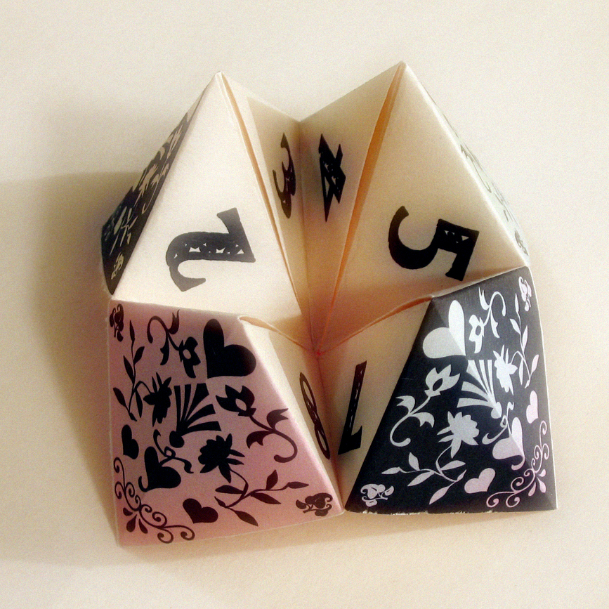
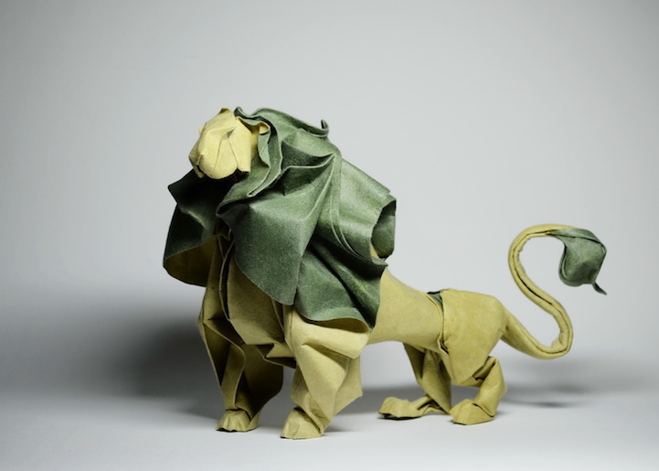
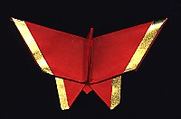
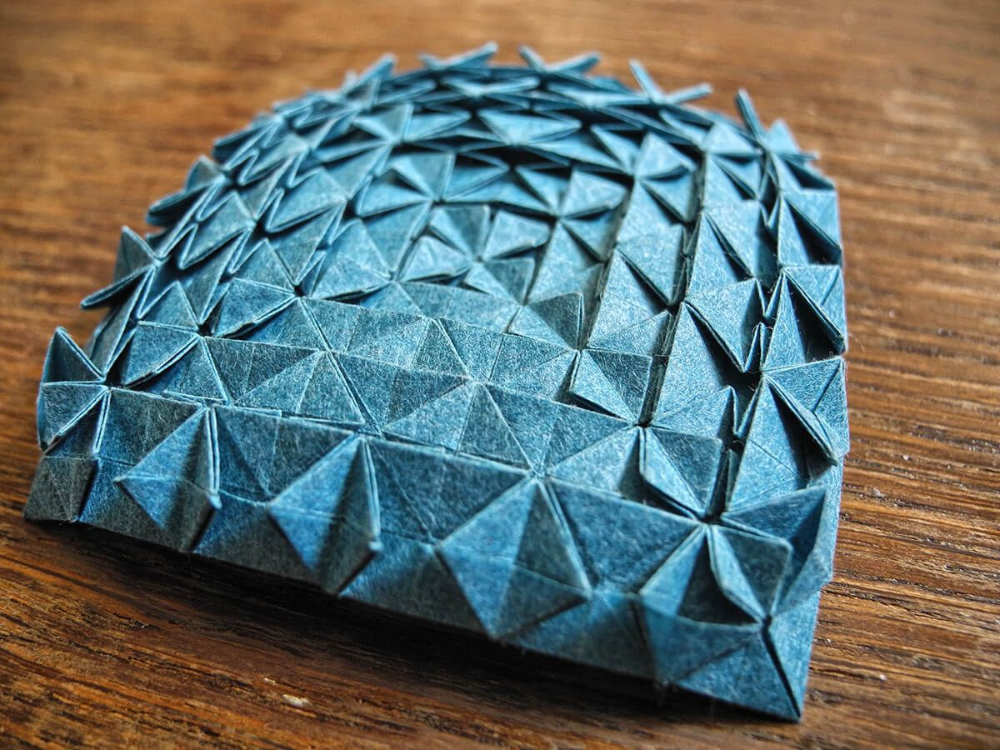
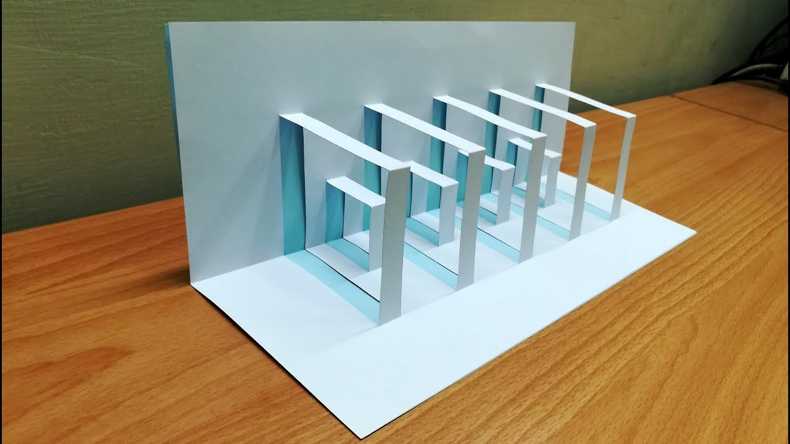
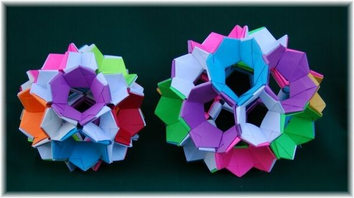

Types of Origami
Action Origami

In addition to the more common still-life origami, there are also moving object designs; origami can move in clever ways. Action origami includes origami that flies, requires inflation to complete, or, when complete, uses the kinetic energy of a person's hands, applied at a certain region on the model, to move another flap or limb. Some argue that, strictly speaking, only the latter is really "recognized" as action origami. Action origami, first appearing with the traditional Japanese flapping bird, is quite common. One example is Robert Lang's instrumentalists; when the figures' heads are pulled away from their bodies, their hands will move, resembling the playing of music.
Modular origami
Modular origami consists of putting a number of identical pieces together to form a complete model. Often the individual pieces are simple, but the final assembly may be more difficult. Many modular origami models are decorative folding balls such as kusudama, which differ from classical origami in that the pieces may be held together using thread or glue.
Chinese paper folding, a cousin of origami, includes a similar style called golden venture folding where large numbers of pieces are put together to create elaborate models. This style is most commonly known as "3D origami". However, that name did not appear until Joie Staff published a series of books titled 3D Origami, More 3D Origami, and More and More 3D Origami.[citation needed] This style originated from some Chinese refugees while they were detained in America and is also called Golden Venture folding from the ship they came on.
Wet Folding
Wet-folding is an origami technique for producing models with gentle curves rather than geometric straight folds and flat surfaces. The paper is dampened so it can be moulded easily, the final model keeps its shape when it dries. It can be used, for instance, to produce very natural looking animal models. Size, an adhesive that is crisp and hard when dry, but dissolves in water when wet and becoming soft and flexible, is often applied to the paper either at the pulp stage while the paper is being formed, or on the surface of a ready sheet of paper. The latter method is called external sizing and most commonly uses Methylcellulose, or MC, paste, or various plant starches.

Pureland Origami
Pureland origami adds the restrictions that only simple mountain/valley folds may be used, and all folds must have straightforward locations. It was developed by John Smith in the 1970s to help inexperienced folders or those with limited motor skills. Some designers also like the challenge of creating within the very strict constraints.

Origami tessellations
Origami tessellation is a branch that has grown in popularity after 2000. A tessellation is a collection of figures filling a plane with no gaps or overlaps. In origami tessellations, pleats are used to connect molecules such as twist folds together in a repeating fashion. During the 1960s, Shuzo Fujimoto was the first to explore twist fold tessellations in any systematic way, coming up with dozens of patterns and establishing the genre in the origami mainstream. Around the same time period, Ron Resch patented some tessellation patterns as part of his explorations into kinetic sculpture and developable surfaces, although his work was not known by the origami community until the 1980s. Chris Palmer is an artist who has extensively explored tessellations after seeing the Zilij patterns in the Alhambra, and has found ways to create detailed origami tessellations out of silk. Robert Lang and Alex Bateman are two designers who use computer programs to create origami tessellations. The first international convention devoted to origami tessellations was hosted in Brasília (Brazil) in 2006,[15] and the first instruction book on tessellation folding patterns was published by Eric Gjerde in 2008.[16] Since then, the field has grown very quickly. Tessellation artists include Polly Verity (Scotland); Joel Cooper, Christine Edison, Ray Schamp and Goran Konjevod from the USA; Roberto Gretter (Italy); Christiane Bettens (Switzerland); Carlos Natan López (Mexico); and Jorge C. Lucero (Brazil).

Kirigami
Kirigami is a Japanese term for paper cutting. Cutting was often used in traditional Japanese origami, but modern innovations in technique have made the use of cuts unnecessary. Most origami designers no longer consider models with cuts to be origami, instead using the term Kirigami to describe them. This change in attitude occurred during the 1960s and 70s, so early origami books often use cuts, but for the most part they have disappeared from the modern origami repertoire; most modern books don't even mention cutting.

Strip folding
Strip folding is a combination of paper folding and paper weaving. A common example of strip folding is called the Lucky Star, also called Chinese lucky star, dream star, wishing star, or simply origami star. Another common fold is the Moravian Star which is made by strip folding in 3-dimensional design to include 16 spikes.
